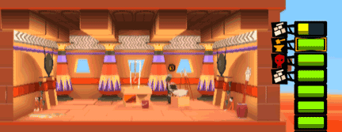
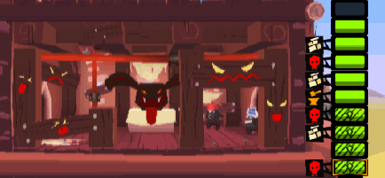

12 |
Las plantas |
 |
|
Existen cinco tipos de plantas. Los diferentes tipos de planta otorgan ventajas o desventajas tanto a los humanos como a los dioses. La particularidad de una planta aparece solamente cuando ha sido completamente construida. Sin embargo, durante su construcción, una inscripción indica el tipo de planta que será.
Ventajas: para nadie. La planta baja en la más básica y no ofrece nada a nadie. Particularidad: ninguna.
Ventajas: para los humanos. El almacén permite a los transportistas acumular los recursos para llevarlos a otra planta más adelante sin necesidad de salir de la torre. Particularidad: Puede contener cuatro veces más de recursos.
Ventajas: para los humanos. La forja es indispensable para los humanos. Allí es donde la unidad ariete confeccionará la herramienta que le permitirá destruir el portal. En una torre solo puede haber una forja. Particularidad: la unidad ariete está asociada a esta planta. Destruirla hace que salga de la torre. 
Ventajas: para los humanos. Un predicador del mal ocupa esta planta y predica la palabra maligna. Esta planta es difícil de destruir. Particularidad: sólida, es imposible asignarle poderes defensivos. 
Ventajas: para los dioses. El templo del bien es una planta reservada a los dioses. Esta planta se construye cuando la cantidad de puntos de respeto acumulados durante la partida alcanza un cierto punto. Un predicador del bien siempre estará presente. Particularidad: El jugador puede destruir esta planta en caso de ser necesario. La misma cuenta con muy pocos puntos de vida.
|


 |
 |
 |